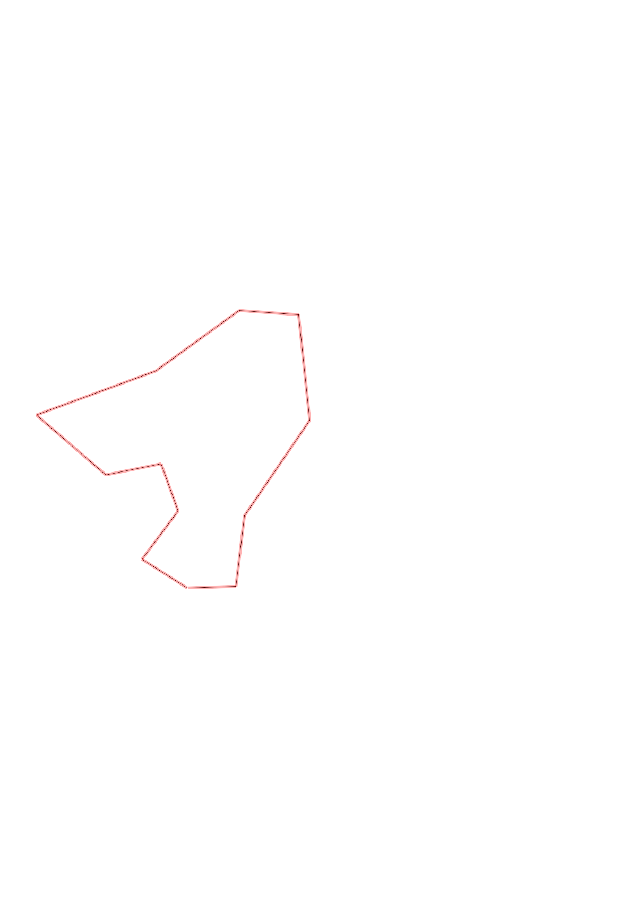
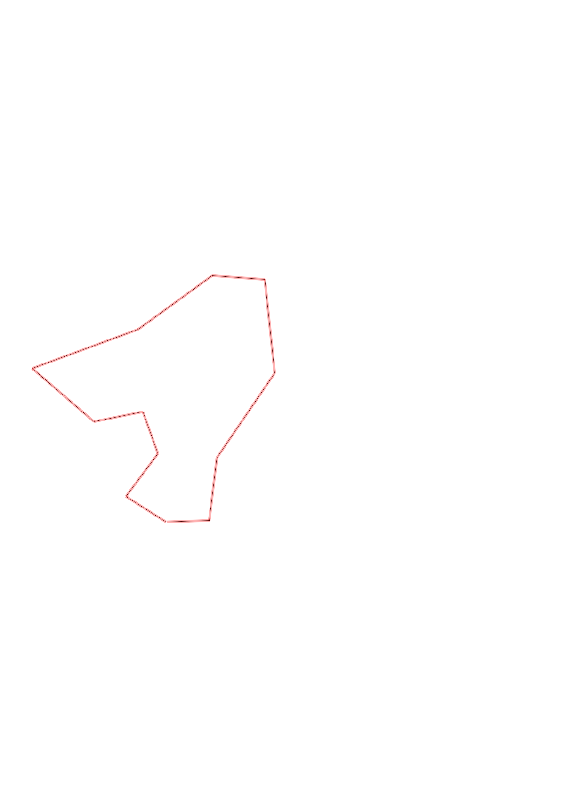

| Control |
Points |
Time Punched |
Distance |
Your Time |
Pace |
Place |
Fastest Time |
Median Time |
% Behind Fastest |
| 35 |
30 |
|
0.27 |
0:01:30 |
05:33 |
7 / 17 |
0:01:07 |
0:01:37 |
34% |
| 51 |
50 |
|
0.3 |
0:03:13 |
10:43 |
8 / 12 |
0:02:01 |
0:03:06 |
59% |
| 58 |
50 |
|
0.25 |
0:04:22 |
17:28 |
9 / 9 |
0:01:32 |
0:02:16 |
184% |
| 72 |
70 |
|
0.28 |
0:03:51 |
13:44 |
8 / 9 |
0:01:47 |
0:02:29 |
115% |
| 92 |
90 |
|
0.46 |
0:05:23 |
11:42 |
7 / 11 |
0:03:10 |
0:04:02 |
70% |
| 53 |
50 |
|
0.63 |
0:10:39 |
16:54 |
8 / 8 |
0:05:32 |
0:06:36 |
92% |
| 65 |
60 |
|
0.51 |
0:05:53 |
11:32 |
5 / 5 |
0:02:49 |
0:03:42 |
108% |
| 34 |
30 |
|
0.3 |
0:03:17 |
10:56 |
3 / 4 |
0:02:51 |
0:03:16 |
15% |
| 36 |
30 |
|
0.53 |
0:03:28 |
06:32 |
2 / 5 |
0:02:45 |
0:03:33 |
26% |
| 41 |
40 |
|
0.57 |
0:08:37 |
15:07 |
2 / 4 |
0:04:05 |
0:09:13 |
111% |
| 63 |
60 |
|
0.35 |
0:09:30 |
27:08 |
5 / 6 |
0:02:36 |
0:04:24 |
265% |
| Finish |
0 |
|
0.23 |
0:01:11 |
05:08 |
4 / 11 |
0:00:57 |
0:01:23 |
24% |
Total Distance Covered: 4.68km
Points Scored: 560
Late Penalty: -20
Final Score: 540
Total Time: 1hours 0minutes 54seconds
Efficiency: 115.38 points/km
 
